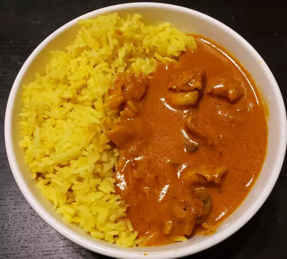

Butter Chickens

Description
Butter chicken is a popular Indian Cuisine across the world.
The dish is not too spicy and has a mild sweet flavour to it.
It is best serverd with naan which is a type of Indian Bread made from flour.
It can be also enjoyed with Indian Jira white rice.
Ingredients
- Butter
- Fresh Boneless Chicken
- Red Chilli powder
- Salt
Fresh Cream
- Vegetable Oil
- Garam Masala
Steps
- Preheat the oven to 375 degrees F (190 degrees C).
- Melt 2 tablespoons butter in a skillet over medium heat. Stir in onion and garlic, and cook slowly until the onion caramelizes to a dark brown, about 15 minutes
- Meanwhile, combine cream, tomato sauce, remaining butter, salt, cayenne pepper, and garam masala in a saucepan over medium-high heat; bring to a simmer. Reduce heat to medium-low, cover, and simmer, stirring occasionally, for 30 minutes. Stir in caramelized onions.
- While the sauce is simmering, toss chicken with vegetable oil until coated. Season with tandoori masala and spread out onto a baking sheet.
- Bake chicken in the preheated oven until no longer pink in the center, about 12 minutes.
- Add cooked chicken to the sauce and simmer for 5 minutes before serving.